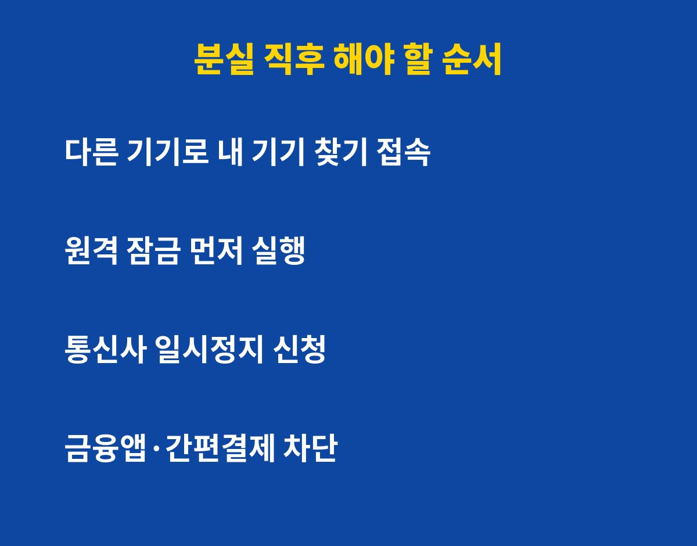

스마트폰 분실 사고, 첫 3분을 어떻게 쓰느냐에 따라 결과가 완전히 달라집니다. 폰을 잃어버렸거나 두고 내린 분이라면 지금 바로 이 순서를 따라 하세요. 왜 통신사 전화보다 '원격 잠금'이 먼저일까요?
당황해서 전화부터 계속 거는 분들이 많은데요, 순서가 중요해요. 먼저 가족 폰이나 PC로 구글 '내 기기 찾기' 또는 삼성·애플의 기기 찾기에 접속하세요. 거기서 위치 확인과 함께 '원격 잠금'을 바로 걸어두는 게 1순위입니다.
잠금 화면에 연락처와 "찾아주시면 사례하겠습니다" 같은 문구를 띄워두면 습득한 사람이 돌려줄 가능성도 올라가요. 잠금을 걸어두면 화면이 켜져 있어도 앱을 마음대로 열 수 없으니 일단 안전해집니다.
원격 잠금을 걸었다면 그다음은 통신사 고객센터에 분실 신고를 하고 회선 일시정지를 요청하세요. 번호를 막아두면 인증번호 문자가 낯선 사람 손에 들어가는 걸 줄일 수 있어요. 이어서 은행·증권·간편결제 앱의 고객센터에서 해당 기기 접속 차단과 이용 제한을 요청하는 게 좋습니다.
카카오톡, 네이버, 구글 같은 주요 계정은 다른 기기에서 로그인해서 '로그인된 기기 로그아웃'을 눌러 두세요. 비밀번호도 이때 바꿔 두는 걸 권해요.
| 순서 | 할 일 | 이유 |
| 1 | 기기 찾기 접속·원격 잠금 | 앱·사진 접근 차단 |
| 2 | 통신사 분실 신고·일시정지 | 인증 문자 악용 방지 |
| 3 | 금융·간편결제 앱 차단 요청 | 결제·이체 피해 예방 |
| 4 | 주요 계정 비밀번호 변경 | 로그인 유지 기기 차단 |

폰을 되찾았어도 바로 쓰면 안 돼요. 누가 설치한 앱이 없는지, 처음 보는 로그인 기록이 없는지 먼저 확인하세요. 그리고 분실 중에 문자로 날아온 낯선 링크는 절대 누르지 마세요. 분실 폰 주인을 노리는 '폰 찾아드렸어요' 식 스미싱이 실제로 자주 쓰이는 수법이거든요.
이상한 점이 하나라도 있다면 비밀번호를 한 번 더 바꾸고, 금융 기관에 이용 내역을 확인해 달라고 요청하세요. 번거로워도 이게 가장 싸게 막는 길입니다.
사고는 갑자기 나니까 평소에 준비해 두는 게 최고예요. 기기 찾기 기능을 켜 두고, 화면 잠금은 지문이나 6자리 이상 숫자로 설정하세요. 가족 번호를 비상 연락처로 등록해 두면 습득자가 연락하기도 쉬워요. 중요한 인증은 문자보다 패스키나 인증 앱으로 옮겨 두면 폰이 남의 손에 들어가도 피해를 줄일 수 있습니다.
도움이 됐다면 구독해 두세요. 이런 생활 속 IT 대처법을 계속 쉽게 정리해 드릴게요.
기사·공식 발표 기준이며 출시·가격 정보는 바뀔 수 있어요.